Mobile App · AI · Health & Nutrition
What started as a request to "just change fonts and colors" became a complete UX overhaul, turning a disjointed food scanner into an intuitive daily nutrition tracker.
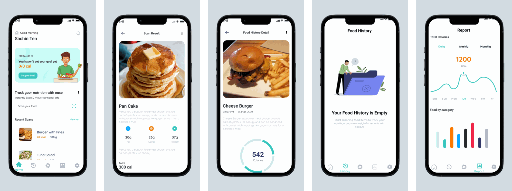
01 — Context
FoodAI is a mobile app that uses AI to scan meals and break down their nutritional content like protein, carbs, and fat which then generates reports to help users track their intake over time.
When I joined the project at Bitskraft, the brief was a single line: "adjust the fonts and colors." But five minutes with the existing app told me something else was going on. The product had been built by developers with no UX input. It had screens. It didn't have a user journey.
I made the case for a broader redesign and got sign off to move forward. The constraint stayed: I had to work within the existing technical architecture and stay close to the developer team throughout. That was fine. Constraints make you sharper.
02 — Problems Identified
Before touching Figma, I audited the existing app across navigation, user flow, and information hierarchy. What I found wasn't a styling problem. It was a product problem.
The original app — before redesign
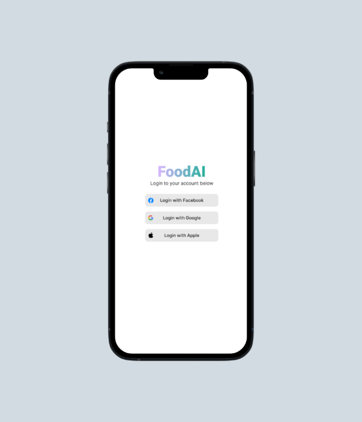
Social login only. No brand personality, no value proposition. Users had no idea what they were signing into or why they should.
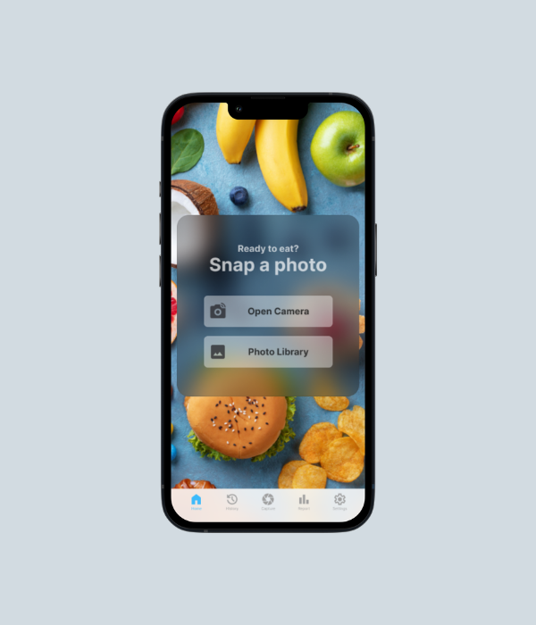
Dropped immediately into a camera prompt. No nutritional context, no daily progress, no reason to come back tomorrow.
03 — Research & Process
I gathered feedback from potential users across three areas: usability, visual clarity, and navigation flow. The finding that kept coming up: users wanted nutrition tracking to feel like a daily habit, not a utility they had to dig into.
I built wireframes to explore new layouts and user flows before any visual work started. Getting the structure right on paper meant catching flow problems early, before they became expensive to fix in Figma.
04 — Design System
Before a single screen was designed, I built a complete design system in Figma. Not because it was in the brief, but because building without one produces inconsistency that compounds with every new screen. The developer team also needed a single source of truth to build from.
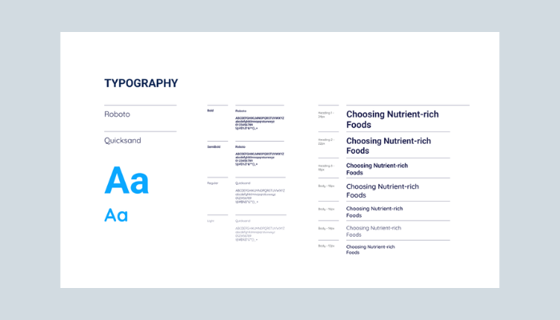
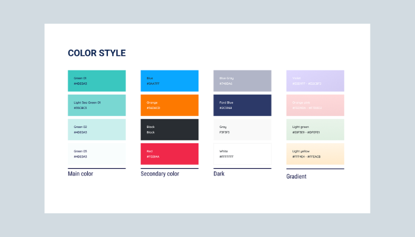
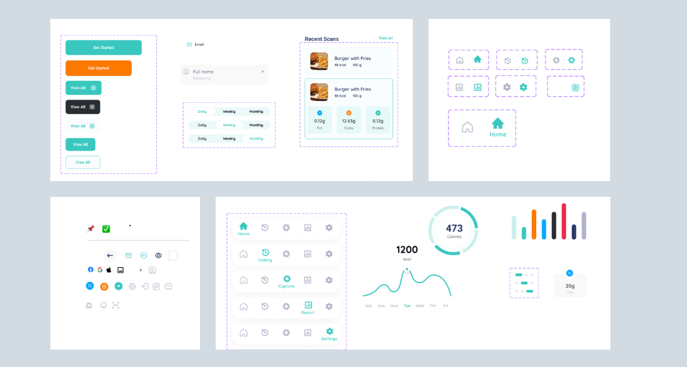
UI component library: button variants, form inputs, tab navigation states, nutrition macro cards, calorie donut charts, and bar chart visualisations — all standardised before a single screen was designed.
05 — Onboarding Redesign
The original app had no onboarding. Users hit a login screen and then immediately a camera. No explanation of what the app did, no goal setup, nothing that made it feel like it was built for them.
The redesigned onboarding introduces FoodAI through a four step feature carousel (Welcome, Scan & Track, View History, Generate Reports), then walks users through account creation and critically a nutrition goal setting screen that appears immediately after signup.
That goal setting screen was the most important addition in the entire project. Without it, the daily progress indicators on the home screen had no target to measure against. Setting calories, carbs, protein, and fat goals upfront made every subsequent interaction feel personally relevant, not generic.
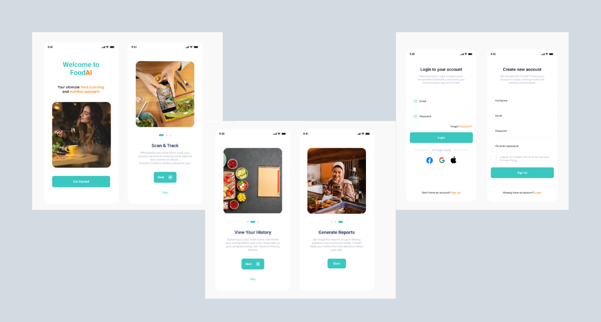
New onboarding flow: feature walkthrough (4 slides) → login or signup → set daily nutrition goal → home. Users arrive at the home screen with context and a personal target already in place.
06 — Final Design
The redesigned app covers every touchpoint in the nutrition tracking journey, from first open to daily habit. Each screen was designed around how users actually interact with food tracking: quickly, in context, expecting immediate feedback.
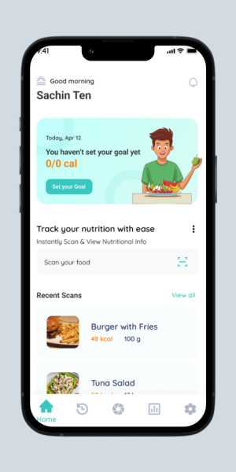
Home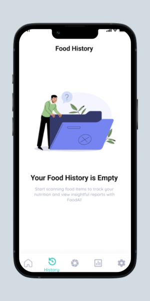
History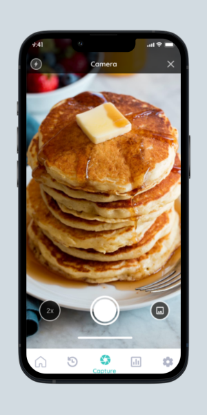
Capture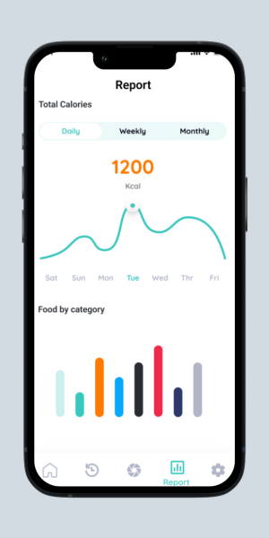
Report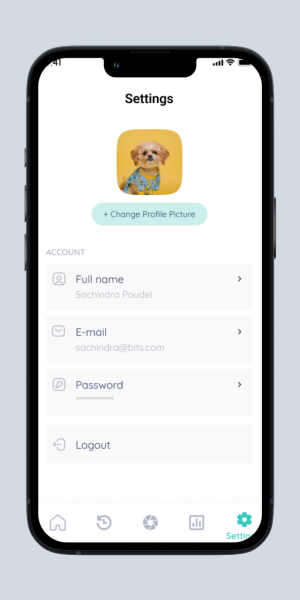
Settings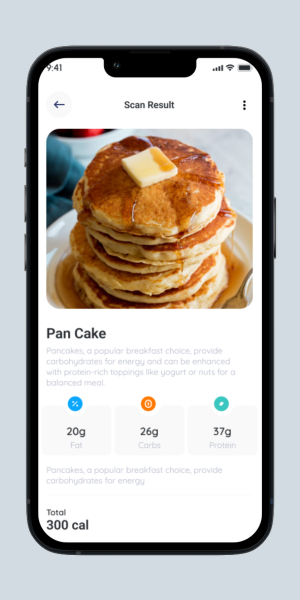
Scan Result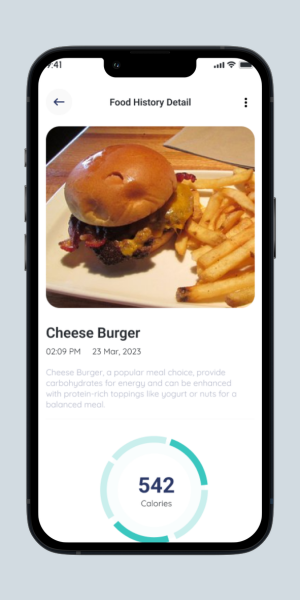
Food Detail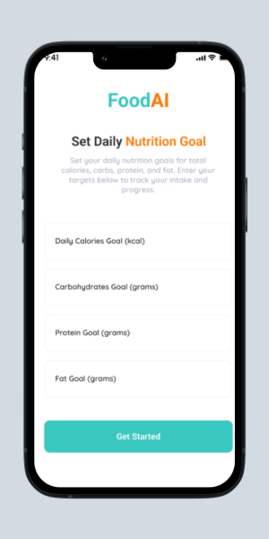
Nutrition Goal07 — Testing & Iterations
After completing the initial redesign, I ran usability testing with a sample group. Each participant was asked to do three things: sign in and set up their profile, capture a food image, and review their nutrition tracking. I watched, noted where they hesitated, and where they got stuck.
Two friction points came up consistently. Both led to design changes before final delivery.
The "Set Nutrition Goal" feature lived inside the Settings menu. Getting there meant: Login → Settings → Set Nutrition Goal. None of the users I tested expected their most used daily feature to be in account settings. Several didn't find it at all.
Nutrition goal setting was moved into the onboarding flow, appearing immediately after signup. The home screen now shows daily progress against that goal on every open. Users set it once during onboarding and never have to find it again.
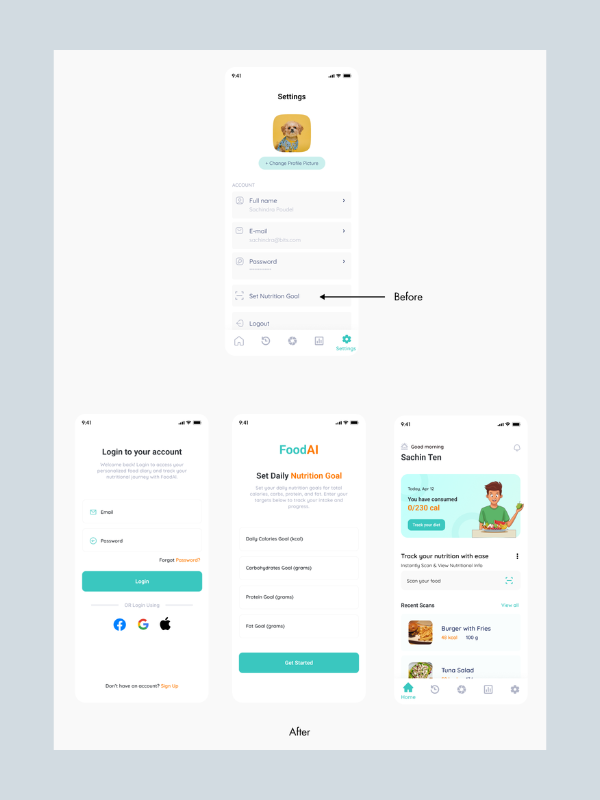
After scanning food, users could see nutritional information but couldn't do anything with it. Scanning automatically committed a log entry, which created confusion: users who scanned just to check a meal's macros didn't intend to log it. Intent wasn't captured.
A prominent "I ate this!" button was added to the food detail screen. Users can now scan freely to check nutrition without logging anything. When they're actually eating, one tap records it. Browsing and tracking became two separate, intentional actions.
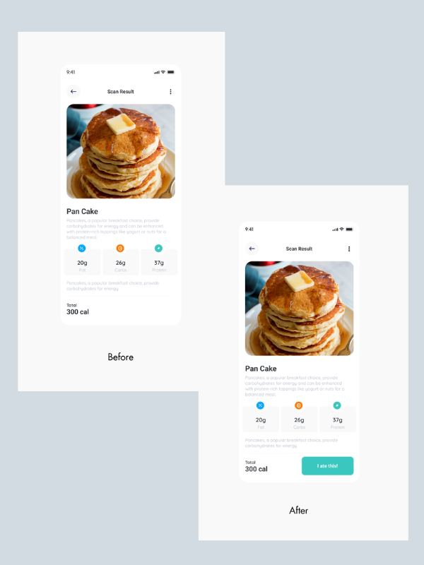
Scan result screen: before and after
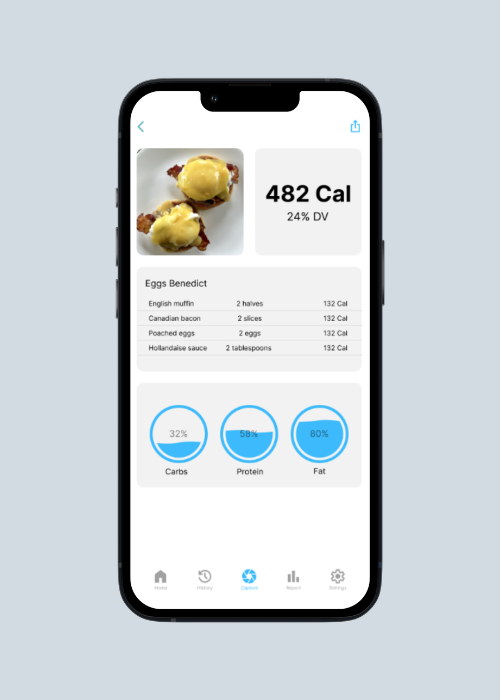
Nutritional info shown, no action to log it. Users were passive viewers with no clear next step.
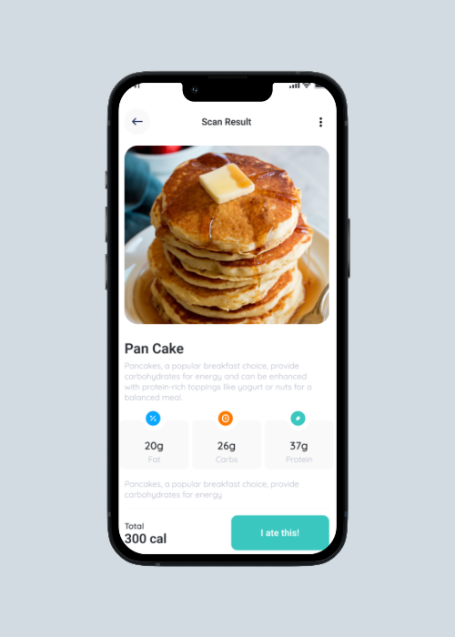
A clear, prominent logging action. Scan to browse, tap to track. Two different intentions, two different actions.
08 — Outcomes
09 — Reflection
The brief said "change fonts and colors." Accepting that would have produced a prettier version of a broken product. Taking an hour to audit the existing experience revealed structural problems that cosmetic changes would never fix. The better deliverable came from questioning the brief, not from following it.
The nutrition goal setup wasn't in the original scope. But without it, the home screen's progress bar had no meaning, it was a bar filling towards nothing. Adding goal setting to onboarding made every subsequent screen work harder. One upfront investment removed countless downstream confusions.
Working within an existing technical architecture meant some ideas had to be adapted. Staying in close communication throughout, rather than handing over a final file and hoping for the best, meant feasibility issues surfaced early. The shipped product matched the design intent. No costly rework.
"User-centred design isn't a phase. It's the lens through which every decision, even the small ones, gets made."Personal reflection on FoodAI